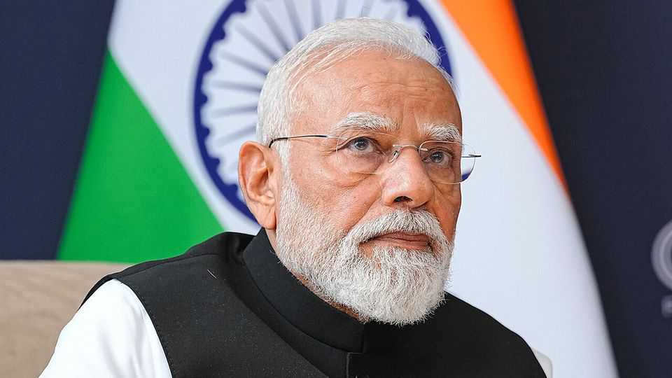

What to make of 25 years of Narendra Modi
He is learning that even rapid economic growth won’t placate voters if it fails to produce jobs

Oct 29th 2026
NO TWO LIVES move in perfect parallel. But the careers of Narendra Modi and Xi Jinping, both born in the early 1950s, have a certain symmetry. A quarter of a century ago each was running one of his country’s coastal, industrial provinces. Mr Xi said he devoted the “prime” of his life to governing Fujian, in China’s south-east. Meanwhile Mr Modi had just become chief minister of Gujarat, in India’s west. Each used regional success as a springboard to the top. Mr Xi became China’s president in March 2013; Mr Modi was elected as India’s prime minister a year later.
This week we assess Mr Modi’s long record. Many, including The Economist, have been queasy about his stance as a Hindu nationalist. His supporters retort that his role as an economic steward matters more. They often point first to the “Gujarat model”. Just see, they say, how his old state blossomed. Income per head there has risen roughly fivefold at constant prices, from a few hundred dollars in 2001 to a little over $4,000. Thank investment in industry and infrastructure. Gujarat is one of India’s richer states. Voters elsewhere, for example in West Bengal, clamour for similar development.
Nationally, too, there is much to cheer. India’s annual GDP growth, at about 7%, comfortably exceeds that of any other large economy, including China’s. This week India held one of the biggest initial public offerings as investors valued Jio, a telecoms firm, at over $100bn. Praise Mr Modi for tax reforms, rapid digitisation, fiscal prudence that limited inflation, vastly better roads, airports and much more. That, combined with well-targeted welfare, has cut the worst poverty. Though crony capitalism is alarming, some corruption has abated. His readiness to strike trade deals and tweak labour laws is welcome. His predecessors managed similar rates of economic growth, but even critics must credit Mr Modi for steady progress.
And yet, that is not enough. A lesson from Mr Xi’s China is that countries must work fast to grow rich before they get old. Unfortunately, the structure of India’s economy is changing too slowly. Look back again at Mr Xi’s old province, Fujian, where income per person leapt more than ten times, from $1,500 to $20,000. Crucially, people there shifted from agriculture into copious—and formal—industrial jobs. The share of workers in farming tumbled from 46% to 13%.
In Gujarat, and India generally, structural change has not properly begun. The share of Gujarati workers in farming has barely budged, from 45% to 42% in 25 years. The national figures are roughly the same. Mr Modi knows this matters. Speaking to The Economist in 2015, he said his priority would be to create jobs and get skilled workers into manufacturing. Those goals were right, but he has not achieved them.
True, some factories have sprung up, to assemble iPhones for export, say. But foreign investment is not flowing well. Astonishingly, India has of late even exported capital. Manufacturing as a share of the economy is 16%, no more than when Mr Modi took office. India may hope to bet on a services economy. But it still needs changes of the sort he has not yet brought about: deeper and better-crafted labour and land reforms; cuts to high tariffs; a stronger workforce nurtured by better schools. Mr Modi’s crony-capitalists, meanwhile, most obviously Gautam Adani, squeeze out other investors.
Unlike Mr Xi, the Indian leader must wrangle a democracy. This is where Mr Modi feels sharp consequences from years of jobless growth. The poorest are better off thanks to extra welfare (more are buying fridges and scooters), but anger is erupting among millions of young, urban and educated people slightly higher up the social ladder, frustrated by the lack of white-collar jobs. Rising energy prices add to the pain. Whatever the headline rate of growth, they are not feeling enough of the benefits. Worse, where India has created valuable jobs—in outsourcing and back-office work, say, or in coding—the threat from AI looms.
This summer a “cockroach movement” of student protesters erupted across cities, forcing Mr Modi to sack a minister for the first time. This autumn big cities have been convulsed by new street protests against the Election Commission, after it excluded 130m names from voters’ rolls (no doubt many were duds, but not all). Protesters accuse the commission’s head of meddling to favour the ruling Bharatiya Janata Party (BJP). Two in five Indians now think elections are not free and fair. Mr Modi should recognise that Indians are weary of his strong-arm tactics. Investors will also be deterred if they see him growing more authoritarian.
This month Mr Modi had little chance to mark his 25-year milestone. His good fortune, though not India’s, is that the main opposition party, Congress, led by Rahul Gandhi offers no compelling rival vision for creating jobs. Nor does any figure in the BJP yet threaten Mr Modi. The result is that this septuagenarian, like the one running China, shows no serious sign of refreshing his government. That is a shame. India needs bolder thinking if it is to thrive. ■